Actor Achiever Group Course Time Action
1 1 High 1 A 2025-01-01 08:27:07 cohesion
2 1 High 1 A 2025-01-01 08:35:20 consensus
3 1 High 1 A 2025-01-01 08:42:18 discuss
4 1 High 1 A 2025-01-01 08:50:00 synthesis
5 1 High 1 A 2025-01-01 08:52:25 adapt
6 1 High 1 A 2025-01-01 08:57:31 consensusNetwork Estimation and Visualization with Nestimate + cograph
2026-04-09
Source:vignettes/articles/cograph-tutorial-nestimate.qmd
1 Introduction
Nestimate (Saqr, López-Pernas, & Misiejuk, 2026) estimates networks from sequence and panel data, and cograph draws them. The two packages divide the work: Nestimate computes the networks, their resampling, comparisons and clusterings, and returns objects that cograph’s splot() draws directly. This tutorial follows one dataset through the steps of a transition network analysis (Saqr et al., 2025; Saqr, López-Pernas, & Tikka, 2025), which has been used, for example, to map students’ self-regulated learning tactics (Peeters, Saqr, & Viberg, 2020): estimating the network, checking the stability of its edges and centralities, comparing groups, and grouping the states into clusters.
| Step | Nestimate | cograph |
|---|---|---|
| Estimate a network | build_network() |
splot() |
| Stability of the edges | bootstrap_network() |
splot(), plot_bootstrap_forest()
|
| Stability of the centralities | centrality_stability() |
splot() |
| Networks per group | build_network(group = ) |
splot() |
| Compare groups | permutation() |
splot() |
| Clusters of states |
build_mcml(), as_tna()
|
splot() |
2 Data
group_regulation_long records the regulation actions of students working in groups, one row per action, with the student (Actor), the time (Time) and the action (Action). It is generated synthetically from the group_regulation dataset of the tna package (Tikka, López-Pernas, & Saqr, 2025). The nine actions, adapt, cohesion, consensus, coregulate, discuss, emotion, monitor, plan and synthesis, are the nodes of the networks below. Achiever marks each student as a high or a low achiever.
3 Estimating networks
3.1 A transition network
build_network() estimates a network from the data. With method = "relative", the weight of the edge from one action to another is the probability that the second follows the first, so each row of the weight matrix sums to 1.
net <- build_network(group_regulation_long, action = "Action",
actor = "Actor", time = "Time", method = "relative")
netTransition Network (relative probabilities) [directed]
Weights: [0.001, 0.498] | mean: 0.115
Strongest edges (10 of 78):
from to weight
cohesion consensus 0.498
adapt consensus 0.477
synthesis consensus 0.466
consensus plan 0.396
monitor discuss 0.375
plan plan 0.374
emotion cohesion 0.325
discuss consensus 0.321
emotion consensus 0.320
plan consensus 0.290
extract_edges(include_self = TRUE) lists every edge; extract_transition_matrix() gives the weight matrix;
extract_initial_probs() the initial probabilities. adapt cohesion consensus coregulate discuss emotion monitor
0.0115 0.0605 0.2140 0.0190 0.1755 0.1515 0.1440
plan synthesis
0.2045 0.0195 The strongest transitions lead to consensus: from cohesion (0.50), from adapt (0.48) and from synthesis (0.47). consensus is also the most frequent first action (0.21), followed by plan (0.20). The network is a netobject, which inherits from cograph_network, so splot() draws it.
splot(net)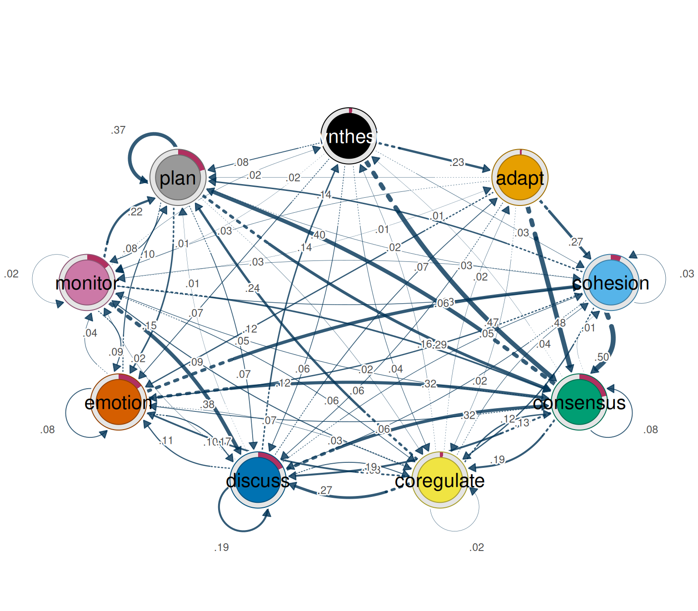
3.2 Other estimators
method selects the estimator; list_estimators() lists them.
name description
1 attention Decay-weighted attention transitions
2 co_occurrence Co-occurrence within sequences
3 cor Pairwise correlation network
4 frequency Raw transition frequency counts
5 gap Gap-allowed transitions weighted by 1/distance
6 glasso EBICglasso regularized partial correlations
7 ising Ising model (L1-penalized logistic regression)
8 latency Reply network weighted by response speed (latency)
9 mgm Mixed Graphical Model (nodewise lasso, EBIC, LW threshold)
10 ngram n-gram transitions (adjacent pairs per n-gram window)
11 pcor Unregularized partial correlations
12 relative Row-normalized transition probabilities
13 reverse Reverse (reply) transitions: transpose of frequency
14 wtna Window-based TNA transitions (one-hot)
15 wtna_cooccurrence Window-based TNA co-occurrence (one-hot)
directed
1 TRUE
2 FALSE
3 FALSE
4 TRUE
5 TRUE
6 FALSE
7 FALSE
8 TRUE
9 FALSE
10 TRUE
11 FALSE
12 TRUE
13 TRUE
14 TRUE
15 FALSEFifteen estimators are available. The directed ones (relative, frequency, attention, ngram, gap, reverse, latency, wtna) describe which action follows which; the undirected ones (cor, pcor, glasso, ising, mgm, co_occurrence, wtna_cooccurrence) describe which actions or variables go together (Saqr, Beck, & López-Pernas, 2024). frequency keeps the counts of the transitions instead of their probabilities, and co_occurrence counts how often two actions occur in the same sequence.
frequency_net <- build_network(group_regulation_long, action = "Action",
actor = "Actor", time = "Time",
method = "frequency")
splot(frequency_net)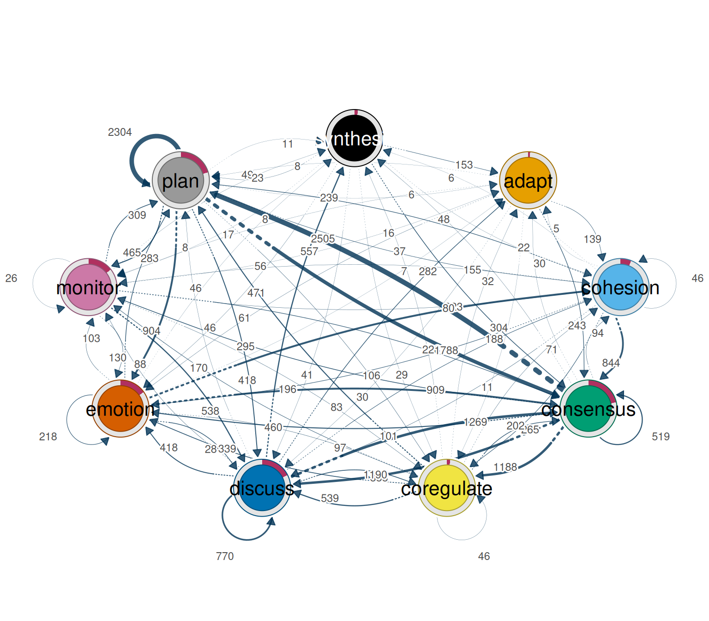
co_occurrence_net <- build_network(group_regulation_long, action = "Action",
actor = "Actor", time = "Time",
method = "co_occurrence")
splot(co_occurrence_net, layout = "spring")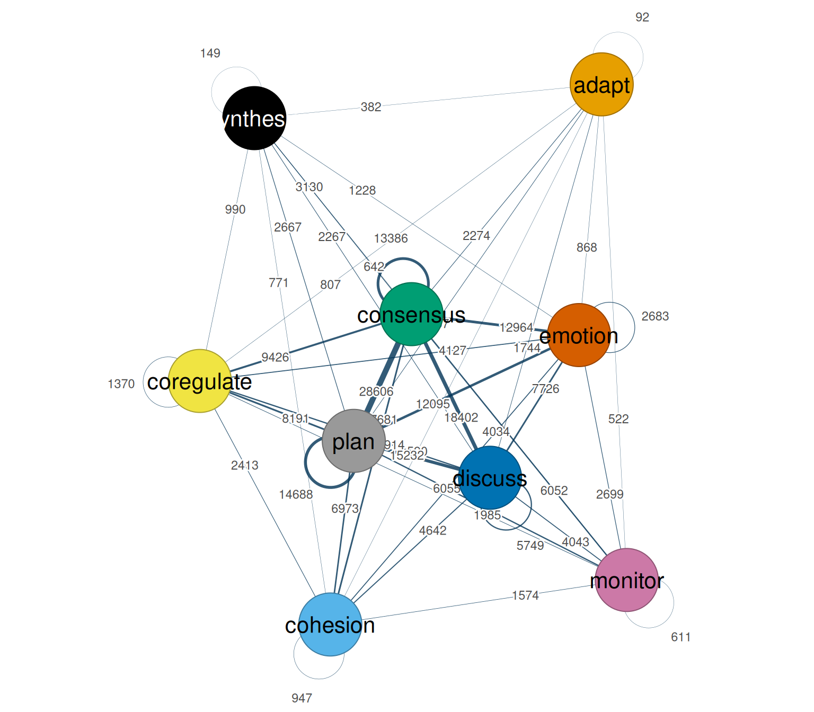
4 Stability of the edges
An edge estimated from one sample may not hold in another. bootstrap_network() resamples the sequences with replacement, re-estimates the network in each resample and reports, for each edge, its mean, its 95% interval and a p-value (Saqr et al., 2025). By default the p-value is the share of resamples in which the edge’s weight falls outside a consistency range of 0.75 to 1.25 times its original weight, so an edge with a small p-value keeps its size across resamples.
set.seed(265)
boot <- bootstrap_network(net, iter = 1000)
boot Edge Mean 95% CI p
------------------------------------------------
cohesion → consensus 0.498 [0.474, 0.521] ***
adapt → consensus 0.478 [0.430, 0.523] ***
synthesis → consensus 0.466 [0.427, 0.507] ***
consensus → plan 0.396 [0.383, 0.407] ***
monitor → discuss 0.375 [0.351, 0.401] ***
... and 46 more significant edges
Bootstrap Network [Transition Network (relative) | directed]
Iterations : 1000 | Nodes : 9
Edges : 51 significant / 78 total
CI : 95% | Inference: stability | CR [0.75, 1.25]Of the 78 edges, 51 are stable at the 5% level. The strongest transitions are also the most precise: cohesion to consensus has a mean of 0.50 and an interval of [0.47, 0.52].
splot() draws the stable edges solid and the others dashed; display = "significant" draws only the stable edges, display = "full" all edges alike, and show_stars = TRUE or show_ci = TRUE add the significance stars or the intervals to the edge labels.
splot(boot)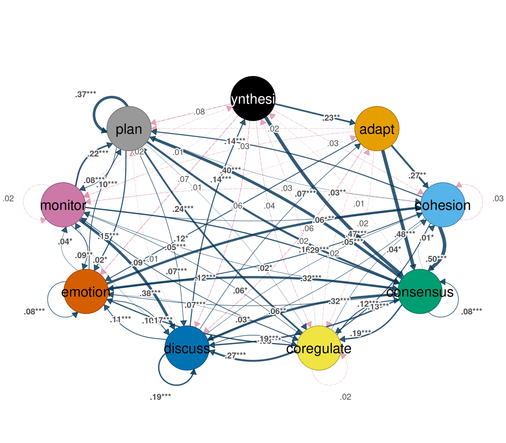
splot(boot, display = "significant")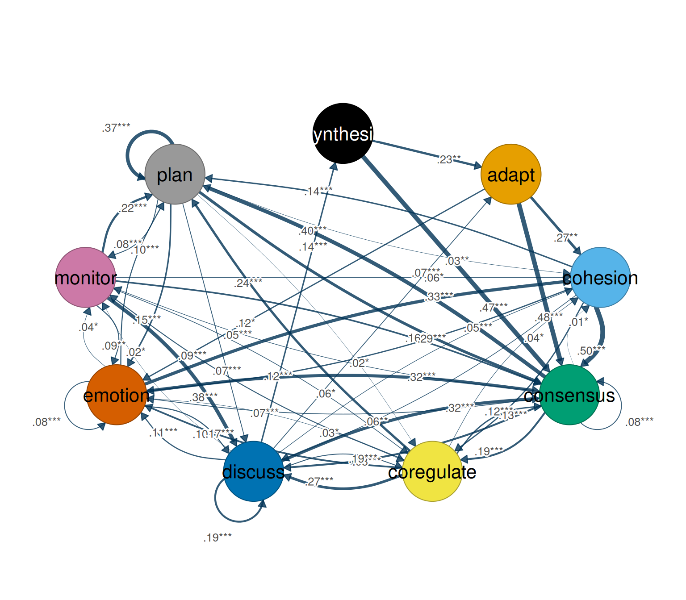
splot(boot, show_ci = TRUE)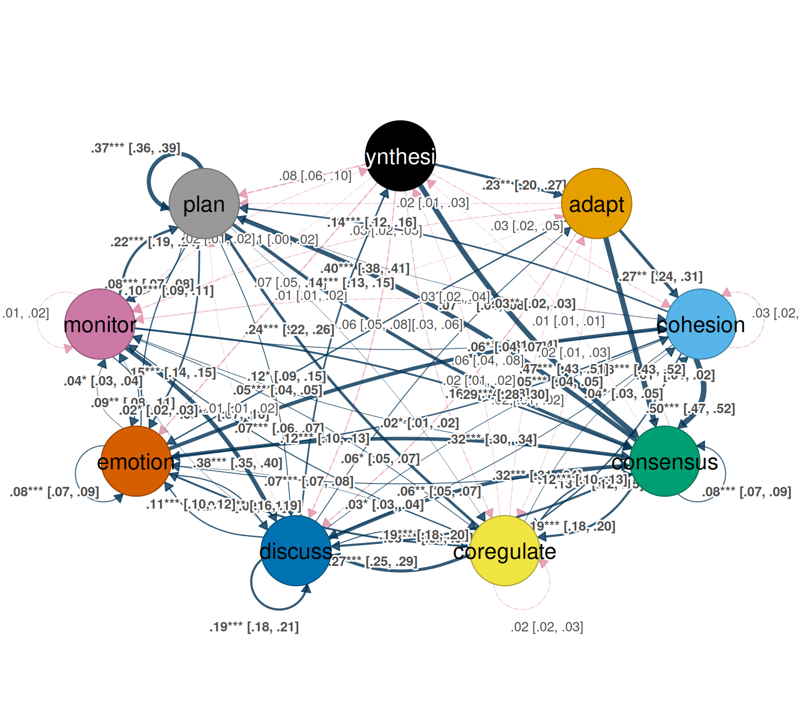
A forest plot shows the estimate and the interval of every edge; layout arranges the edges in a list, a circle or groups.
plot_bootstrap_forest(boot, show_ci = TRUE)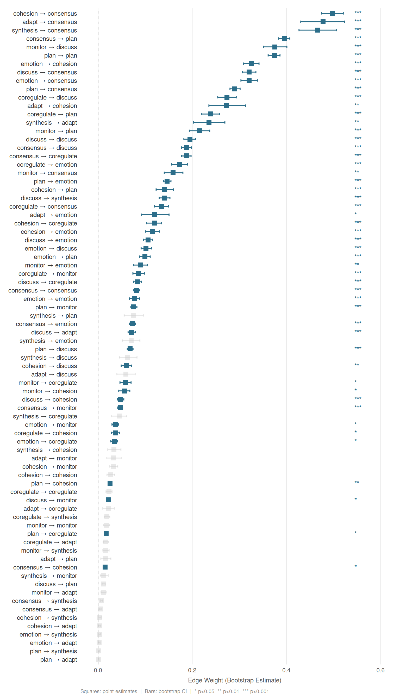
5 Stability of the centralities
Centrality measures summarise each node’s position in the network. centrality_stability() drops increasing proportions of the sequences, recomputes the centralities, and correlates them with the centralities of the full data (Epskamp, Borsboom, & Fried, 2018). The CS-coefficient is the largest proportion of sequences that can be dropped while the correlation stays above 0.7 in 95% of the resamples; Epskamp et al. (2018) treat values above 0.5 as acceptable.
set.seed(265)
cs <- centrality_stability(net, iter = 500)
csCentrality Stability (500 iterations, threshold = 0.7)
Drop proportions: 0.1, 0.2, 0.3, 0.4, 0.5, 0.6, 0.7, 0.8, 0.9
CS-coefficients:
InStrength 0.90
OutStrength 0.90
Betweenness 0.90
splot(cs)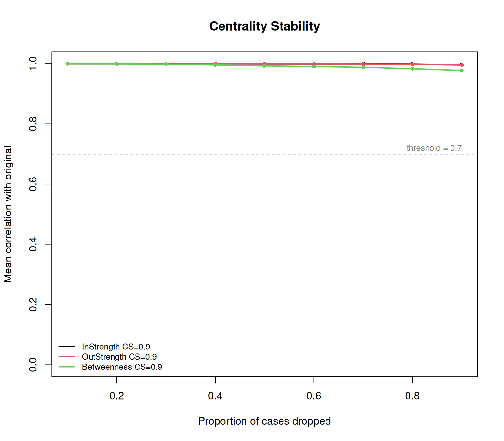
The CS-coefficients of in-strength, out-strength and betweenness are all 0.90: the ranking of the actions by these measures holds when 90% of the sequences are removed.
6 Group networks
group = estimates one network per value of a covariate and returns a group of networks (López-Pernas, Tikka, & Saqr, 2025). splot() draws the groups side by side on a common scale, so edge widths can be compared across panels.
group_net <- build_network(group_regulation_long, action = "Action",
actor = "Actor", time = "Time",
method = "relative", group = "Achiever")
group_netGroup Networks (2 groups, group_col: Achiever)
Group Nodes Edges Weights
High 9 76 [0.001, 0.576]
Low 9 75 [0.000, 0.462]
splot(group_net)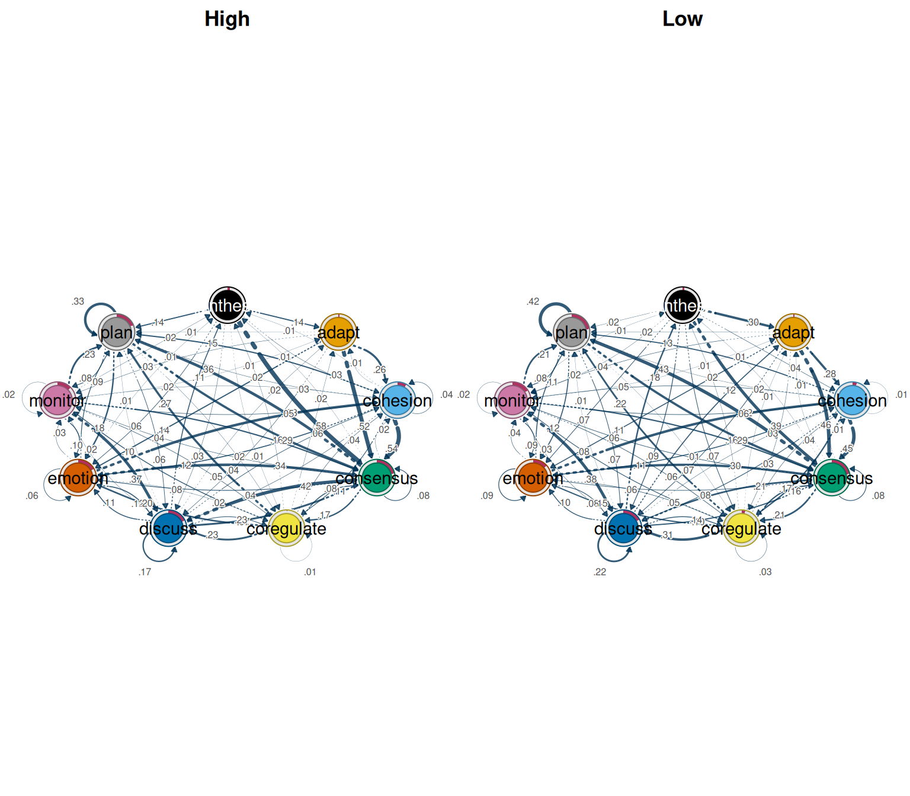
bootstrap_network() on the group resamples each group.
set.seed(265)
group_boot <- bootstrap_network(group_net, iter = 500)
splot(group_boot)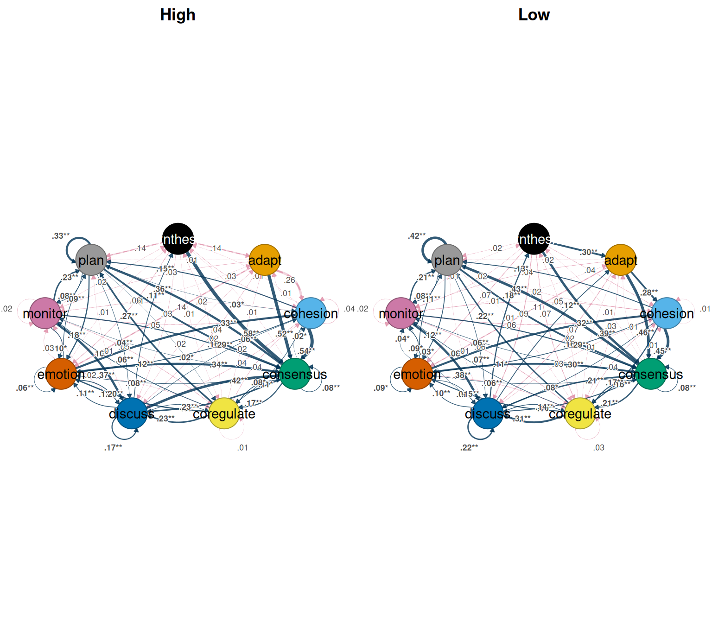
7 Comparing groups
permutation() compares the networks of the groups edge by edge: it shuffles the group labels of the sequences, recomputes the difference of every edge, and compares the observed difference with the shuffled ones (Saqr et al., 2025). On a group of networks it compares every pair of groups.
set.seed(265)
group_perm <- permutation(group_net, iter = 1000)
group_permGrouped Permutation Test
Groups: High vs Low
-- High vs Low --
Permutation Test: Transition Network (relative probabilities) [directed]
Iterations: 1000 | Alpha: 0.05
Nodes: 9 | Edges tested: 78 | Significant: 42
Global test (networks differ overall?): M = 2.612 (p = 0.000999) | S = 0.210 (p = 0.000999)The networks of high and low achievers differ: 42 of the 78 transitions differ at the 5% level, and the global statistic M, the sum of the absolute edge differences, is 2.61 (p = 0.001).
group from to weight_x weight_y diff
1 High vs Low adapt cohesion 0.26241135 0.27717391 -0.014762566
2 High vs Low adapt consensus 0.51773050 0.46195652 0.055773975
3 High vs Low adapt coregulate 0.00000000 0.02989130 -0.029891304
4 High vs Low adapt discuss 0.03546099 0.06793478 -0.032473790
5 High vs Low adapt emotion 0.14184397 0.11141304 0.030430928
6 High vs Low adapt monitor 0.02836879 0.03532609 -0.006957293
7 High vs Low adapt plan 0.01418440 0.01630435 -0.002119951
8 High vs Low cohesion adapt 0.00533049 0.00000000 0.005330490
9 High vs Low cohesion cohesion 0.04371002 0.00660502 0.037105002
10 High vs Low cohesion consensus 0.53624733 0.45046235 0.085784983
effect_size p_value sig
1 -0.3922188 0.712287712 FALSE
2 1.2669055 0.201798202 FALSE
3 -2.4196843 0.011988012 TRUE
4 -1.6142325 0.103896104 FALSE
5 1.0508991 0.300699301 FALSE
6 -0.4479287 0.665334665 FALSE
7 -0.1965672 0.751248751 FALSE
8 2.0799910 0.054945055 FALSE
9 4.4791305 0.000999001 TRUE
10 3.5701213 0.001998002 TRUEweight_x and weight_y are the transition probabilities of high and low achievers, diff their difference, and effect_size the difference in standard deviations of the permuted differences. For example, low achievers move from cohesion to coregulate more often (0.17 against 0.08), and high achievers from cohesion to consensus (0.54 against 0.45).
splot() draws the edges that differ, coloured by the group in which they are stronger.
splot(group_perm, edge_positive_color = "#4A6FE3",
edge_negative_color = "#D33F6A")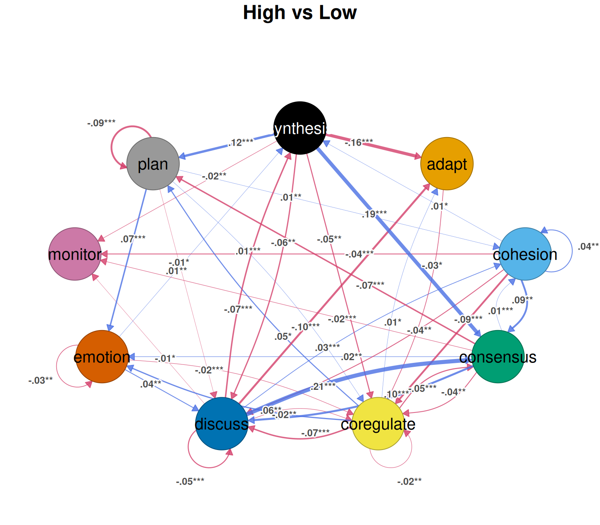
Blue edges are stronger among high achievers and red edges among low achievers; show_nonsig = TRUE adds the edges that do not differ, and show_stars = TRUE the significance stars.
8 Clusters of states
The nine actions fall into two groups of behaviour: regulation of the task (monitor, plan, coregulate, adapt) and social interaction (cohesion, consensus, discuss, emotion, synthesis). build_mcml() estimates a multi-cluster, multi-level network: a network of the clusters, and a network of the actions within each cluster (Zhang et al., 2026).
clusters <- list(
Regulatory = c("monitor", "plan", "coregulate", "adapt"),
Social = c("cohesion", "consensus", "discuss", "emotion", "synthesis")
)
cluster_net <- build_mcml(net, clusters = clusters)
cluster_netMCML Network
============
Type: tna | Method: sum
Nodes: 9 | Clusters: 2
Transitions: 25533
Macro: 11997 | Per-cluster: 13536
Clusters:
Regulatory (4): monitor, plan, coregulate, adapt
Social (5): cohesion, consensus, discuss, emotion, synthesis
Macro (cluster-level) weights:
Regulatory Social
Regulatory 0.4042 0.5958
Social 0.3879 0.6121
splot(cluster_net)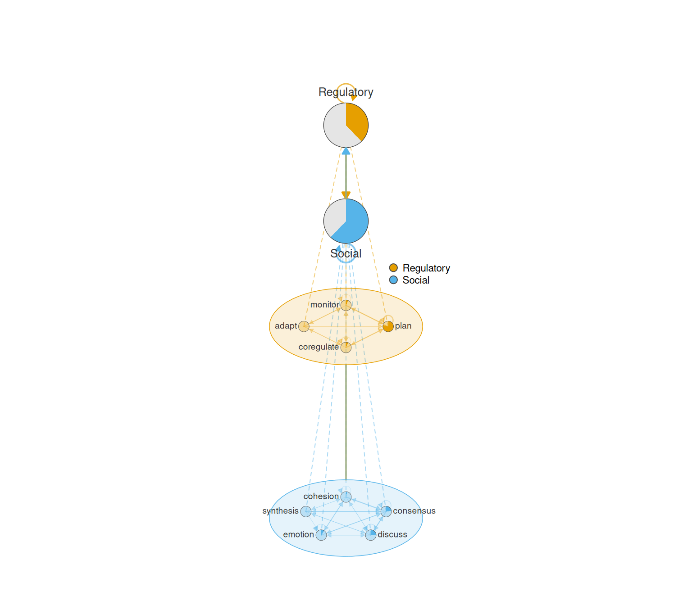
At the level of the clusters, both kinds of action are followed more often by a social action: a regulatory action by a social one with probability 0.60, and a social action by another social action with probability 0.61. as_tna() converts the levels into transition networks, one for the clusters and one for the actions within each cluster.
9 How to cite this article
Saqr, M., López-Pernas, S., & Misiejuk, K. (2026). Network estimation and visualization with Nestimate + cograph. Nestimate. https://doi.org/10.5281/zenodo.24528512 · HTML · PDF
10 References
Epskamp, S., Borsboom, D., & Fried, E. I. (2018). Estimating psychological networks and their accuracy: A tutorial paper. Behavior Research Methods, 50(1), 195–212. https://doi.org/10.3758/s13428-017-0862-1
López-Pernas, S., Tikka, S., & Saqr, M. (2025). Mining patterns and clusters with transition network analysis: A heterogeneity approach. In M. Saqr & S. López-Pernas (Eds.), Advanced learning analytics methods: AI, precision and complexity (pp. 447–468). Springer. https://doi.org/10.1007/978-3-031-95365-1_17
Peeters, W., Saqr, M., & Viberg, O. (2020). Applying learning analytics to map students’ self-regulated learning tactics in an academic writing course. In Proceedings of the 28th International Conference on Computers in Education (ICCE 2020) (pp. 245–254).
Saqr, M., Beck, E., & López-Pernas, S. (2024). Psychological networks: A modern approach to analysis of learning and complex learning processes. In M. Saqr & S. López-Pernas (Eds.), Learning analytics methods and tutorials: A practical guide using R (pp. 639–671). Springer. https://doi.org/10.1007/978-3-031-54464-4_19
Saqr, M., López-Pernas, S., & Misiejuk, K. (2026). Nestimate: An R package for dynamic, probabilistic, and high order network analysis. Applied Psychological Measurement. https://doi.org/10.1177/01466216261472019
Saqr, M., López-Pernas, S., & Tikka, S. (2025). Mapping relational dynamics with transition network analysis: A primer and tutorial. In M. Saqr & S. López-Pernas (Eds.), Advanced learning analytics methods: AI, precision and complexity (pp. 371–411). Springer. https://doi.org/10.1007/978-3-031-95365-1_15
Saqr, M., López-Pernas, S., Törmänen, T., Kaliisa, R., Misiejuk, K., & Tikka, S. (2025). Transition network analysis: A novel framework for modeling, visualizing, and identifying the temporal patterns of learners and learning processes. In Proceedings of the 15th International Learning Analytics and Knowledge Conference (LAK25) (pp. 351–361). ACM. https://doi.org/10.1145/3706468.3706513
Tikka, S., López-Pernas, S., & Saqr, M. (2025). tna: An R package for transition network analysis. Applied Psychological Measurement, 49(6), 326–328. https://doi.org/10.1177/01466216251348840
Zhang, C., López-Pernas, S., Wang, W., & Saqr, M. (2026). Mapping the clinical reasoning process in medical simulations using multi-cluster multi-layer transition network analysis. In Mindful TEL: Learning technologies shaped with intention (pp. 267–272). Springer. https://doi.org/10.1007/978-3-032-37982-5_43